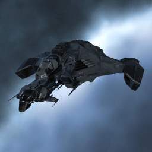

Moa

Тип корабля: Крейсер
Государство/Организация: Caldari
Примерная стоимость: 11.500.000 ISK
Описание
Крейсер типа «Моа» представляет собой мощный корабль общего назначения; тяжёлые орудия «Моа» позволяют его пилоту не теряться перед лицом любых обитателей космоса. В противоположность «Тораксу» крейсер типа «Моа» наиболее эффективен на дальних дистанциях, с которых его рельсотроны уничтожают более близоруких противников.
Характеристики
Корпус
Запас прочности корпуса: 1.500 ед.
Вместимость грузового отсека: 450 м^3
Объем отсека для дронов: 15 м^3
Пропускная способность канала телеуправления: 15 Мбит/с
Масса: 12.000.000 кг
Занимает объем: 101.000,0 м^3 (10.000,0 м^3 в разобранном виде)
Влияние инертности конструкции: 0,52x
Сопротивление корпуса ЭМ-урону: 33 %
Сопротивление корпуса термальному урону: 33 %
Сопротивление корпуса кинетическому урону: 33 %
Сопротивление корпуса фугасному урону: 33 %
Броня
Запас прочности брони: 1.000 ед.
Сопротивление брони ЭМ-урону: 50 %
Сопротивление брони термальному урону: 45 %
Сопротивление брони кинетическому урону: 25 %
Сопротивление брони фугасному урону: 10 %
Щит
Запас прочности щита: 2.500 ед.
Влияние на время регенерации щитов: 20 минут и 50 секунд
Сопротивление щита ЭМ-урону: 0 %
Сопротивление щита термальному урону: 20 %
Сопротивление щита кинетическому урону: 40 %
Сопротивление щита фугасному урону: 50 %
Сопротивление средствам РЭП
Сопротивление накопителя нейтрализирующему воздействию: 0 %
Сопротивление воздействию генератору стазис-поля: 0 %
Сопротивление воздействию помех на наводку вооружения: 0 %
Накопитель энергии
Емкость накопителя: 1.550,0 ГДж
Время востановления заряда: 8 минут и 10 секунд
Целеуказания
Максимальная дальность захвата цели: 55 км
Максимальное количество захваченных целей: 7
Радиус сигнатуры: 135 м
Разрешающая способность систем захвата цели: 260 мм
Эффективность радарной системы: -
Эффективность магнитнометрической системы: -
Эффективность гравиметрической системы: 17 ед.
Эффективность ладарной системы: -
Двигательная установка
Максимальная скорость: 190 м/с
Скорость в варп-режиме: 4,0 а.е./с.
Служба оснащения
Мощность ЦПУ: 380,0 Тф
Мощность реактора: 850 МВт
Калибровка: 400 ед.
Точки монтажа орудийных установок: 5
Точки монтажа пусковых установок: -
Разъемы большой мощности: 5
Разъемы средней мощности: 5
Разъемы малой мощности: 4
Разъемы под установку тюнинг-модулей: 3